Ce que j'ai construit
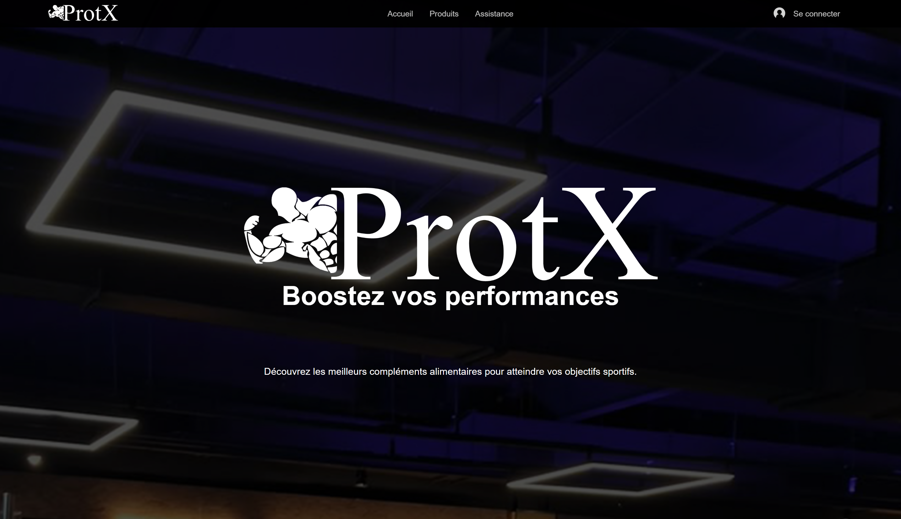
ProtX — E-commerce sportif
Projet de fin de licence. Application de vente de compléments alimentaires complète, développée en HTML, CSS, JavaScript et PHP avec base de données MySQL.
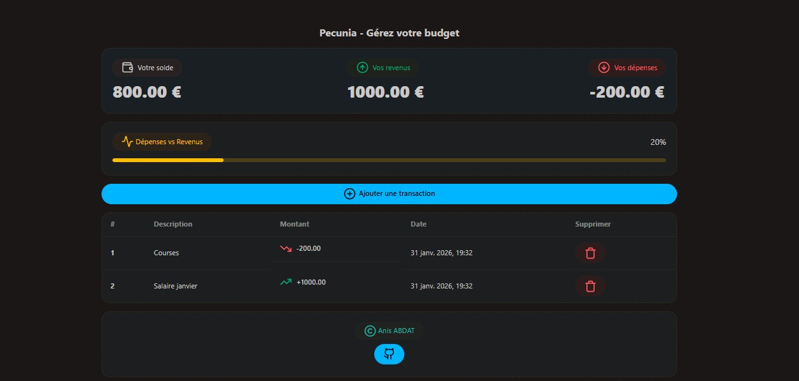
Pecunia — Gestion de budget
Application web moderne de gestion budgétaire personnelle avec architecture Next.js + Django REST Framework. CRUD complet, interface intuitive, déployé sur Vercel.
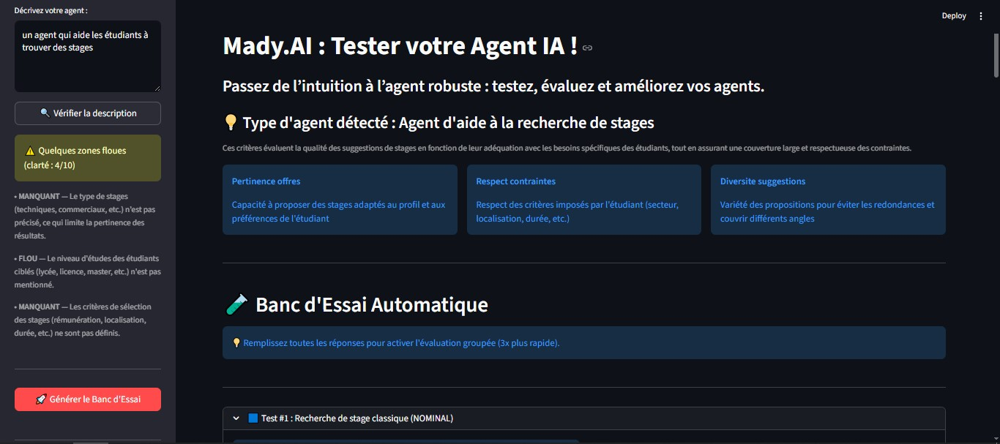
Mady IA
Outil no-code pour tester et améliorer des agents IA. Génération de scénarios, évaluation de réponses et recommandations de robustesse via API Mistral.
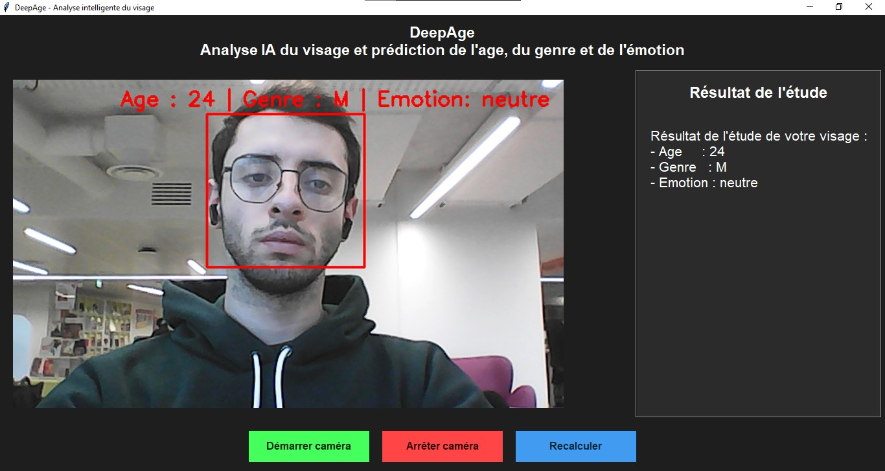
DeepAge
Application Python de prédiction temps réel de l'âge, du genre et de l'émotion via webcam. Modèles CNN entraînés, détection OpenCV.
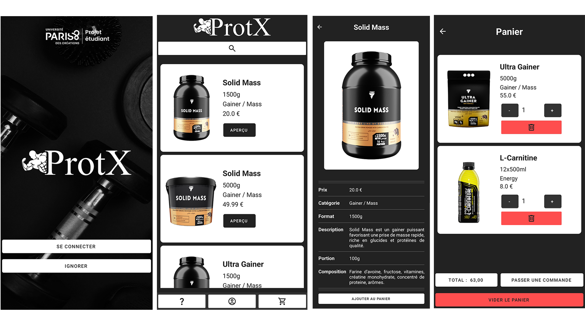
ProtX — Application mobile
App Android de vente de compléments alimentaires. Panier, commandes, profil utilisateur. Firebase Firestore + Room pour la persistance locale.
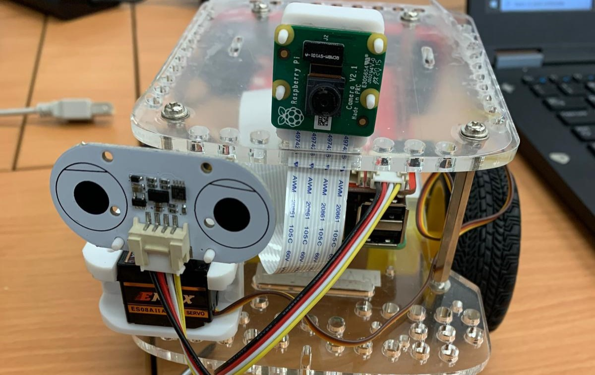
Kartbot
Robot GoPiGo3 sur Raspberry Pi 3, piloté via app Android. Site web de visualisation des stats de course et circuit 3D interactif.
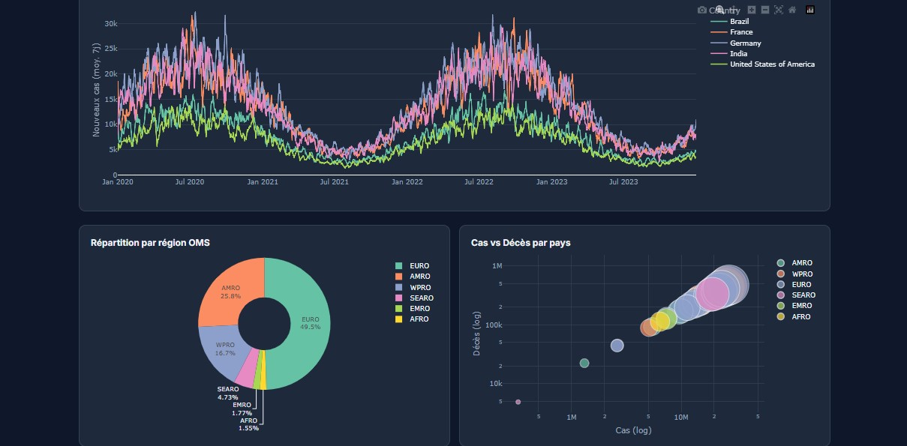
Dashboard COVID-19
Dashboard interactif de visualisation des données OMS. KPI, cartes choroplèthes, graphiques temporels et filtres dynamiques.
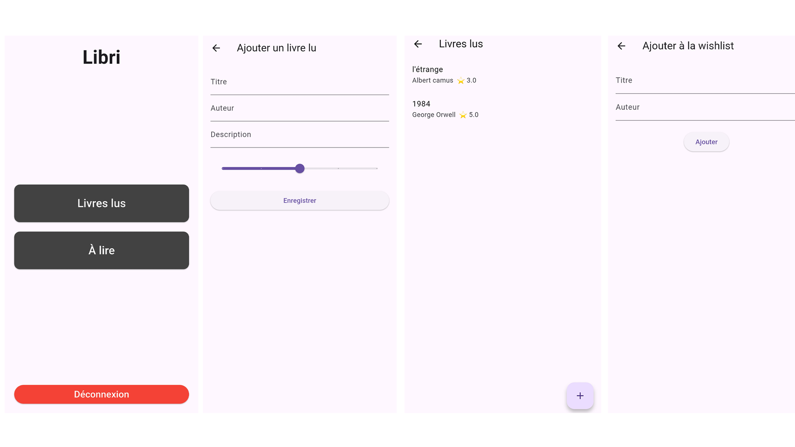
Libri — Suivi de lectures
Application Flutter de gestion de bibliothèque personnelle. Ajout, notation, wishlist et synchronisation Firebase sécurisée.
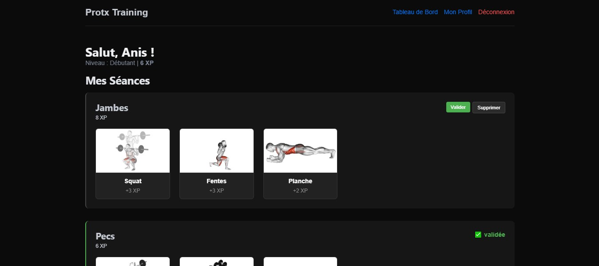
ProtX Training
Application de suivi de musculation en Swift avec Hummingbird. Planification de séances, système d'XP et démonstrations d'exercices animées.
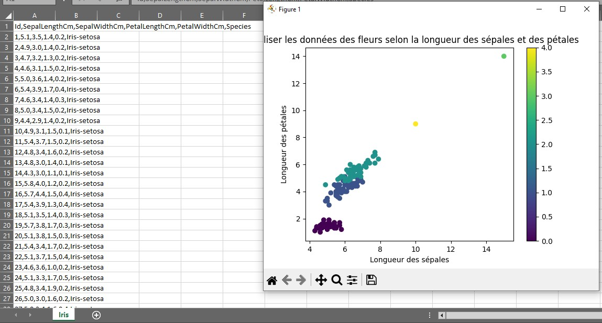
IRIS — Classification KNN
Modèle de classification du dataset Iris avec algorithme K-Nearest Neighbors, prétraitement, analyse exploratoire et visualisation des performances.
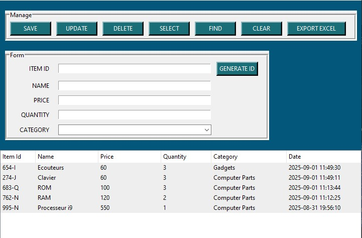
Gestion de Stock
Logiciel bureau Python avec interface Tkinter. CRUD produits, base MySQL, sauvegarde et export Excel. Interface intuitive pour suivi de stock.
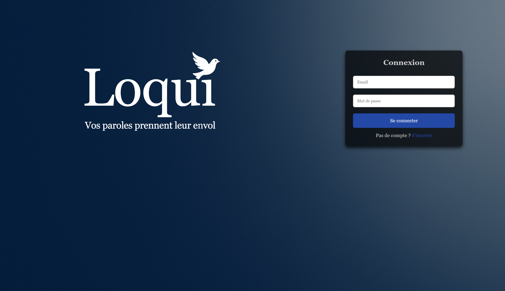
Loqui — Messagerie
Plateforme de messagerie web complète : inscription, connexion, chat général et privé, envoi de fichiers, base de données MySQL via PHP.
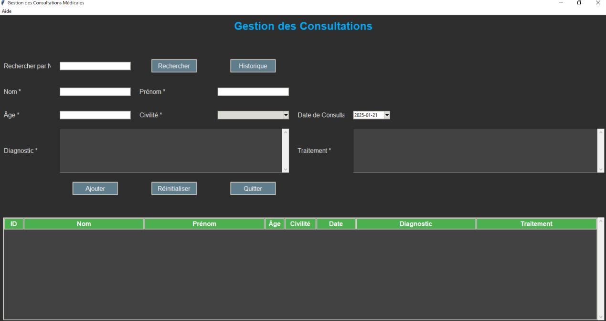
Suivi Médical
Logiciel de gestion de consultations médicales en Python, architecture MVC. Conçu pour aider un médecin à gérer le suivi de ses patients.
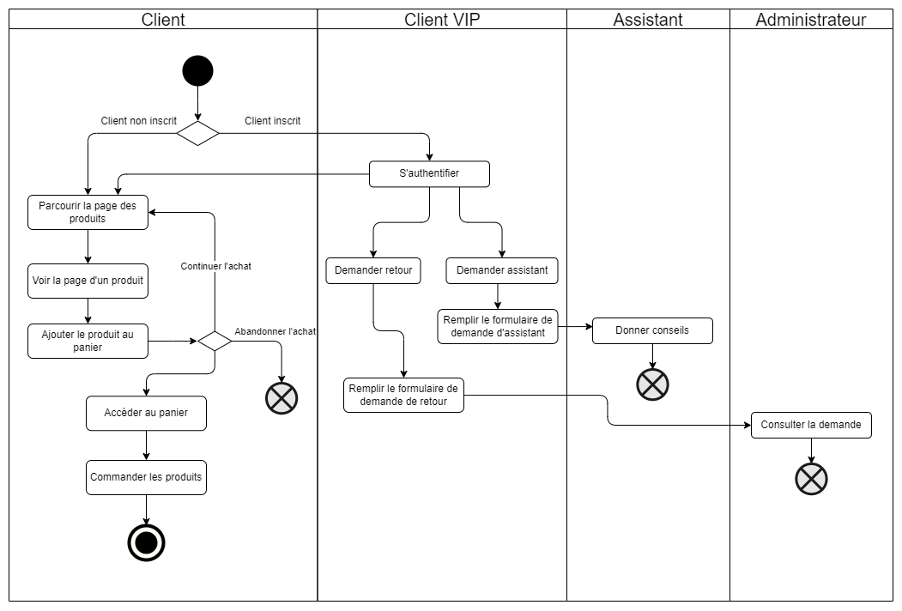
Modélisation UML — ProtX
Modélisation complète du système ProtX avant implémentation : diagrammes de classe, cas d'usage, séquence, activité, composants et déploiement.
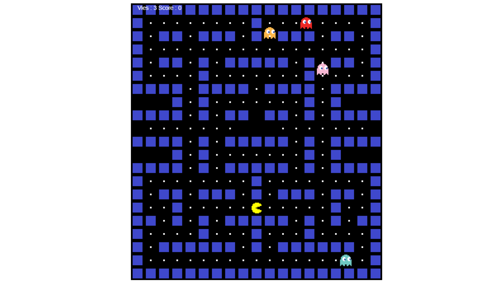
Pac-Man JavaScript
Recréation du jeu classique Pac-Man en JavaScript. Canvas, gestion clavier, collisions, logique de déplacement et comportements aléatoires des fantômes.

Smart Canne
Site vitrine pour une startup universitaire développant une canne intelligente. Présentation produit responsive en HTML et CSS.